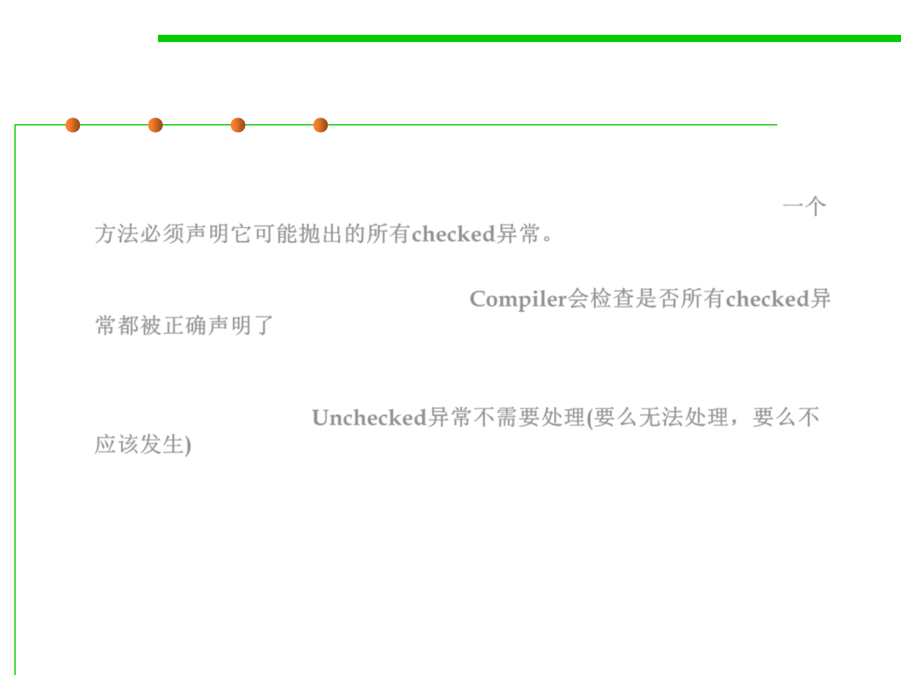

Summary
7.2 Error and Exception Handling
▪ Summary:
– A method must declare all the checked exceptions that it might throw.一个
方法必须声明它可能抛出的所有checked异常。
– If your method fails to faithfully declare all checked exceptions, the
compiler will issue an error message. Compiler会检查是否所有checked异
常都被正确声明了
– Unchecked exceptions are either beyond your control (Error) or result
from conditions that you should not have allowed in the first place
(RuntimeException). Unchecked异常不需要处理(要么无法处理，要么不
应该发生)